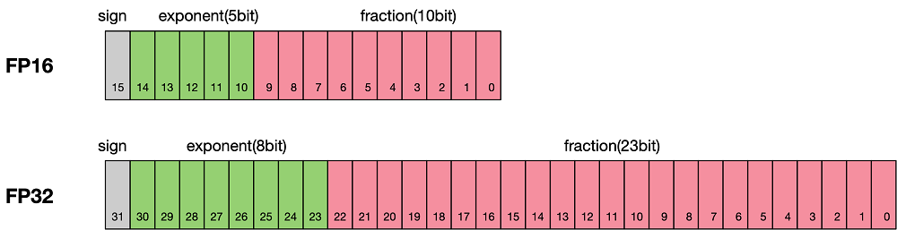
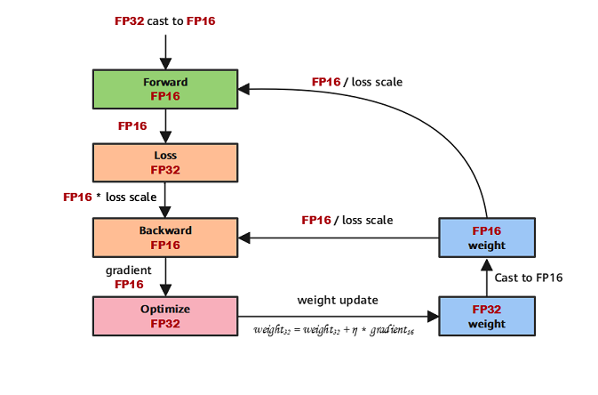

Enabling Mixed Precision

Overview
Generally, when a neural network model is trained, the default data type is FP32. In recent years, to accelerate training time, reduce memory occupied during network training, and store a trained model with same precision, more and more mixed-precision training methods are proposed in the industry. The mixed-precision training herein means that both single precision (FP32) and half precision (FP16) are used in a training process.
Floating-point Data Type
Floating-point data types include double-precision (FP64), single-precision (FP32), and half-precision (FP16). In a training process of a neural network model, an FP32 data type is generally used by default to indicate a network model weight and other parameters. The following is a brief introduction to floating-point data types.
According to IEEE 754, floating-point data types are classified into double-precision (FP64), single-precision (FP32), and half-precision (FP16). Each type is represented by three different bits. FP64 indicates a data type that uses 8 bytes (64 bits in total) for encoding and storage. FP32 indicates a data type that uses 4 bytes (32 bits in total) and FP16 indicates a data type that uses 2 bytes (16 bits in total). As shown in the following figure:

As shown in the figure, the storage space of FP16 is half that of FP32, and the storage space of FP32 is half that of FP64. It consists of three parts:
The highest bit indicates the sign bit.
The middle bits indicate exponent bits.
The low bits indicate fraction bits.
FP16 is used as an example. The first sign bit sign indicates a positive or negative sign, and the next five bits indicate an exponent. All 0s and all 1s have special uses, so the binary range is 00001~11110. The last 10 bits indicate a fraction. Suppose S denotes the decimal value of sign bit, E denotes the decimal value of exponent, and fraction denotes the decimal value of fraction. The formula is as follows:
Similarly, suppose M is score value, the true value of a formatted FP32 is as follows:
The true value of a formatted FP64 is as follows:
The maximum value that can be represented by FP16 is 0 11110 1111111111, which is calculated as follows:
where b indicates binary value, and d indicates decimal value.
The minimum value that can be represented by FP16 is 0 00001 0000000000, which is calculated as follows:
Therefore, the maximum value range of FP16 is [-65504, 65504], and the precision range is \(2^{-24}\). If the value is beyond this range, the value is set to 0.
FP16 Training Issues
Why do we need mixed-precision? Compared with FP32, FP16 has the following advantages:
Reduced memory usage: The bit width of FP16 is half of that of FP32. Therefore, the memory occupied by parameters such as the weight is also half of the original memory. The saved memory can be used to store larger network models or train more data.
Higher communication efficiency: For distributed training, especially the large-scale model training, the communication overhead restricts the overall performance. A smaller communication bit width means that the communication performance can be improved, the waiting time can be reduced, and the data flow can be accelerated.
Higher computing efficiency: On special AI acceleration chips, such as Huawei Ascend 910 and 310 series, or GPUs of the NVIDIA VOLTA architecture, the computing performance of FP16 is faster than that of FP32.
However, using FP16 also brings some problems, the most important of which are precision overflow and rounding error.
Data overflow: Data overflow is easliy to understand. The valid data range of FP16 is \([5.9\\times10^{-8}, 65504]\), and that of FP32 is \([1.4\times10^{-45}, 1.7\times10^{38}]\). We can see that the valid range of FP16 is much narrower than that of FP32. When FP16 is used to replace FP32, overflow and underflow occur. In deep learning, a gradient (a first-order derivative) of a weight in a network model needs to be calculated. Therefore, the gradient is smaller than the weight value, and underflow often occurs.
Rounding error: Rounding error instruction is when the backward gradient of a network model is small, FP32 is usually used. However, when it is converted to FP16, the interval is smaller than the minimum interval, causing data overflow. For example, 0.00006666666 can be properly represented in FP32, but it will be represented as 0.000067 in FP16. The number that does not meet the minimum interval requirement of FP16 will be forcibly rounded off.
Mixed-precision Computing Process
The following figure shows the typical computation process of mixed precision in MindSpore.

Parameters are stored in FP32 format.
During the forward computation, if an FP16 operator is involved, the operator input and parameters need to be cast from FP32 to FP16.
The Loss layer is set to FP32.
During backward computation, the value is multiplied by Loss Scale to avoid underflow due to a small gradient.
The FP16 parameter is used for gradient computation, and the result is cast back to FP32.
Then, the value is divided by Loss scale to restore the multiplied gradient.
The optimizer checks whether the gradient overflows. If yes, the optimizer skips the update. If no, the optimizer uses FP32 to update the original parameters.
This document describes the computation process by using examples of automatic and manual mixed precision.
MindSpore Mixed-precision
Automatic Mixed-Precision
To use the automatic mixed-precision, you need to call the Model API to transfer the network to be trained and optimizer as the input. This API converts the network model operators into FP16 operators.
Due to precision problems, the
BatchNormoperator and operators involved in loss still use FP32.
The specific implementation steps for using the Model interface are:
Introduce the MindSpore model API
Model.Define a network: This step is the same as that for defining a common network (no new configuration is required).
Create a dataset: For this step, refer to Data Processing.
Use the
ModelAPI to encapsulate the network model, optimizer, and loss function, and set theamp_levelparameter. For details, see MindSpore API. In this step, MindSpore automatically selects an appropriate operator to convert FP32 to FP16.
The following is a basic code example. First, import the required libraries and declarations, and define the LeNet-5 network model.
import numpy as np
import mindspore.nn as nn
from mindspore.nn import Accuracy
import mindspore as ms
from mindspore.common.initializer import Normal
from mindspore import dataset as ds
ms.set_context(mode=ms.GRAPH_MODE)
ms.set_context(device_target="CPU")
class LeNet5(nn.Cell):
"""
Lenet network
Args:
num_class (int): Number of classes. Default: 10.
num_channel (int): Number of channels. Default: 1.
Returns:
Tensor, output tensor
"""
def __init__(self, num_class=10, num_channel=1):
super(LeNet5, self).__init__()
self.conv1 = nn.Conv2d(num_channel, 6, 5, pad_mode='valid')
self.conv2 = nn.Conv2d(6, 16, 5, pad_mode='valid')
self.fc1 = nn.Dense(16 * 5 * 5, 120, weight_init=Normal(0.02))
self.fc2 = nn.Dense(120, 84, weight_init=Normal(0.02))
self.fc3 = nn.Dense(84, num_class, weight_init=Normal(0.02))
self.relu = nn.ReLU()
self.max_pool2d = nn.MaxPool2d(kernel_size=2, stride=2)
self.flatten = nn.Flatten()
def construct(self, x):
x = self.max_pool2d(self.relu(self.conv1(x)))
x = self.max_pool2d(self.relu(self.conv2(x)))
x = self.flatten(x)
x = self.relu(self.fc1(x))
x = self.relu(self.fc2(x))
x = self.fc3(x)
return x
Create a virtual random dataset for data input of the sample model.
# create dataset
def get_data(num, img_size=(1, 32, 32), num_classes=10, is_onehot=True):
for _ in range(num):
img = np.random.randn(*img_size)
target = np.random.randint(0, num_classes)
target_ret = np.array([target]).astype(np.float32)
if is_onehot:
target_onehot = np.zeros(shape=(num_classes,))
target_onehot[target] = 1
target_ret = target_onehot.astype(np.float32)
yield img.astype(np.float32), target_ret
def create_dataset(num_data=1024, batch_size=32, repeat_size=1):
input_data = ds.GeneratorDataset(list(get_data(num_data)), column_names=['data','label'])
input_data = input_data.batch(batch_size, drop_remainder=True)
input_data = input_data.repeat(repeat_size)
return input_data
Set the amp_level parameter and use the Model API to encapsulate the network model, optimizer, and loss function.
ds_train = create_dataset()
# Initialize network
network = LeNet5(10)
# Define Loss and Optimizer
net_loss = nn.SoftmaxCrossEntropyWithLogits(reduction="mean")
net_opt = nn.Momentum(network.trainable_params(),learning_rate=0.01, momentum=0.9)
model = ms.Model(network, net_loss, net_opt, metrics={"Accuracy": Accuracy()}, amp_level="O3", loss_scale_manager=None)
# Run training
model.train(epoch=10, train_dataset=ds_train)
Manual Mixed-Precision
MindSpore also supports manual mixed-precision. (Manual mixed-precision is not recommended unless you want to customize special networks and features.)
Assume that only one dense layer on the network uses FP16 for computation and other layers use FP32.
The mixed-precision is configured in the unit of Cell. The default type of a Cell is FP32.
The following are the implementation steps of manual mixed-precision:
Define the network: This step is similar with the Step 2 in the automatic mixed-precision.
Configure the mixed-precision: Use
to_float(mstype.float16)to set the operators involved in the Cell to FP16.Use
TrainOneStepCellto encapsulate the network model and optimizer.
The following is a basic code example. First, import the required libraries and declarations.
import numpy as np
import mindspore.nn as nn
from mindspore.nn import Accuracy
import mindspore as ms
from mindspore.common.initializer import Normal
from mindspore import dataset as ds
import mindspore.ops as ops
ms.set_context(mode=ms.GRAPH_MODE, device_target="GPU")
The network is defined in the same way regardless of whether FP32 or FP16 is used. The difference is that after the network is defined, the dense layer is declared to use FP16 for computing when the network model is initialized, that is, net.dense.to_float(mstype.float16).
class LeNet5(nn.Cell):
"""
Lenet network
Args:
num_class (int): Number of classes. Default: 10.
num_channel (int): Number of channels. Default: 1.
Returns:
Tensor, output tensor
"""
def __init__(self, num_class=10, num_channel=1):
super(LeNet5, self).__init__()
self.conv1 = nn.Conv2d(num_channel, 6, 5, pad_mode='valid')
self.conv2 = nn.Conv2d(6, 16, 5, pad_mode='valid')
self.fc1 = nn.Dense(16 * 5 * 5, 120, weight_init=Normal(0.02))
self.fc2 = nn.Dense(120, 84, weight_init=Normal(0.02))
self.fc3 = nn.Dense(84, num_class, weight_init=Normal(0.02))
self.relu = nn.ReLU()
self.max_pool2d = nn.MaxPool2d(kernel_size=2, stride=2)
self.flatten = nn.Flatten()
self.cast = ops.Cast()
def construct(self, x):
x = self.conv1(x)
x = self.cast(x, mstype.float32)
x = self.relu(x)
x = self.max_pool2d(x)
x = self.max_pool2d(self.relu(self.conv2(x)))
x = self.flatten(x)
x = self.relu(self.fc1(x))
x = self.relu(self.fc2(x))
x = self.fc3(x)
return x
# create dataset
def get_data(num, img_size=(1, 32, 32), num_classes=10, is_onehot=True):
for _ in range(num):
img = np.random.randn(*img_size)
target = np.random.randint(0, num_classes)
target_ret = np.array([target]).astype(np.float32)
if is_onehot:
target_onehot = np.zeros(shape=(num_classes,))
target_onehot[target] = 1
target_ret = target_onehot.astype(np.float32)
yield img.astype(np.float32), target_ret
def create_dataset(num_data=1024, batch_size=32, repeat_size=1):
input_data = ds.GeneratorDataset(list(get_data(num_data)), column_names=['data','label'])
input_data = input_data.batch(batch_size, drop_remainder=True)
input_data = input_data.repeat(repeat_size)
return input_data
ds_train = create_dataset()
network = LeNet5(10)
net_loss = nn.SoftmaxCrossEntropyWithLogits(reduction="mean")
net_opt = nn.Momentum(network.trainable_params(),learning_rate=0.01, momentum=0.9)
network.conv1.to_float(mstype.float16)
model = ms.Model(network, net_loss, net_opt, metrics={"Accuracy": Accuracy()}, amp_level="O2")
model.train(epoch=2, train_dataset=ds_train)
Constraint: When mixed-precision is used, the backward network can be generated only by the automatic differential function. Otherwise, MindSpore may generate exception information indicating that the data format does not match.
Loss Scale
Loss Scale is mainly used in the process of mixed-precision training.
In the process of mixed precision training, the FP16 type is used instead of the FP32 type for data storage, so as to achieve the effect of reducing memory and improving the computing speed. However, because the FP16 type is much smaller than the range represented by the FP32 type, data underflow occurs when parameters (such as gradients) become very small during training. The Loss Scale is proposed to solve the underflow of FP16 type data.
The main idea is to enlarge the loss by a certain multiple when calculating the loss. Due to the existence of the chain rule, the gradient also expands accordingly, and then the corresponding multiple is reduced when the optimizer updates the weight, thus avoiding the situation of data underflow without affecting the calculation result.
Two ways to scale are available in MindSpore, namely FixedLossScaleManager and DynamicLossScaleManager, which need to be used with the Model. When building models by using the Model, the mixed-precision strategy amp_level and the Loss Scale approach loss_scale_manager can be configured.
First, let’s take a look at why mixing accuracy is needed. The advantages of using FP16 to train a neural network are:
Reduce memory occupation: The bit width of FP16 is half that of FP32, so the memory occupied by parameters such as weights is also half of the original, and the saved memory can be used to put a larger network model or use more data for training.
Accelerate communication efficiency: For distributed training, especially in the process of large model training, the overhead of communication restricts the overall performance of network model training, and the less bit width of communication means that communication performance can be improved. Waiting time is reduced, and data circulation can be accelerated.
Higher computing effciency: On special AI-accelerated chips such as Huawei’s Ascend 910 and 310 series, or GPUs of the Titan V and Tesla V100 of the NVIDIA VOLTA architecture, the performance of performing operations using FP16 is faster than that of the FP32.
But using FP16 also brings some problems, the most important of which are precision overflow and rounding error, and Loss Scale is to solve the precision overflow and proposed.
As shown in the figure, if only FP32 training is used, the model converges better, but if mixed-precision training is used, there will be a situation where the network model cannot converge. The reason is that the value of the gradient is too small, and using the FP16 representation will cause the problem of underflow under the data, resulting in the model not converging, as shown in the gray part of the figure. Loss Scale needs to be introduced.

The following is in the network model training stage, a layer of activation function gradient distribution, of which 68% of the network model activation parameter bit 0. Another 4% of the accuracy in the \(2^{-32}, 2^{-20}\) interval, directly use FP16 to represent the data inside, which truncates the underflow data. All gradient values will become 0.

In order to solve the problem of ladder overflowing over small data, the forward calculated Loss value is amplified, that is, the parameters of FP32 are multiplied by a factor coefficient, and the possible overflowing decimal data is moved forward and panned to the data range that FP16 can represent. According to the chain differentiation law, amplifying the Loss acts on each gradient of backpropagation, which is more efficient than amplifying on each gradient.

Loss amplification needs to be achieved in combination with mixing accuracy, and its main main ideas are:
Scale up stage: After the network model forward calculation, the resulting loss change value DLoss is increased by a factor of \(2^K\) before the repercussion propagation.
Scale down stage: After backpropagation, the weight gradient is reduced by \(2^K\), and the FP32 value is restored for storage.
Dynamic Loss Scale: The loss scale mentioned above is to use a default value to scale the loss value, in order to make full use of the dynamic range of FP16, you can better mitigate the rounding error, and try to use a relatively large magnification. To summarize the dynamic loss scaling algorithm, it is to reduce the loss scale whenever the gradient overflows, and intermittently try to increase the loss scale, so as to achieve the use of the highest loss scale factor without causing overflow, and better restore accuracy.
The dynamic loss scale algorithm is as follows:
The algorithm of dynamic loss scaling starts with a relatively high scaling factor (such as \(2^{24}\)), then starts training and checks whether the number overflows in the iteration (Infs/Nans);
If there is no gradient overflow, the scale factor is not adjusted and the iteration continues; if the gradient overflow is detected, the scale factor is halved and the gradient update is reconfirmed until the parameter does not appear in the overflow range;
In the later stages of training, the loss has become stable and convergent, and the amplitude of the gradient update is often small, which can allow a higher loss scaling factor to prevent data underflow again.
Therefore, the dynamic loss scaling algorithm attempts to increase the loss scaling by the F multiple every N (N=2000) iterations, and then performs step 2 to check for overflow.
Loss scale used in MindSpore
The following two APIs in MindSpore that use the loss scaling algorithm are described separately FixedLossScaleManager and DynamicLossScaleManager.
FixedLossScaleManager
FixedLossScaleManager does not change the size of the scale when scaling, and the value of the scale is controlled by the input parameter loss_scale, which can be specified by the user. The default value is taken if it is not specified.
Another parameter of FixedLossScaleManager is drop_overflow_update, which controls whether parameters are updated in the event of an overflow.
In general, the LossScale function does not need to be used with the optimizer, but when using FixedLossScaleManager, if drop_overflow_update is False, the optimizer needs to set the value of loss_scale and the value of loss_scale should be the same as that of FixedLossScaleManager.
The detailed use of FixedLossScaleManager is as follows:
Import the necessary libraries and declare execution using graph mode.
import numpy as np import mindspore as ms import mindspore.nn as nn import mindspore as ms from mindspore.nn import Accuracy from mindspore.common.initializer import Normal from mindspore import dataset as ds ms.set_seed(0) ms.set_context(mode=ms.GRAPH_MODE)
Define the LeNet5 network model, and any network model can use the Loss Scale mechanism.
class LeNet5(nn.Cell): """ Lenet network Args: num_class (int): Number of classes. Default: 10. num_channel (int): Number of channels. Default: 1. Returns: Tensor, output tensor """ def __init__(self, num_class=10, num_channel=1): super(LeNet5, self).__init__() self.conv1 = nn.Conv2d(num_channel, 6, 5, pad_mode='valid') self.conv2 = nn.Conv2d(6, 16, 5, pad_mode='valid') self.fc1 = nn.Dense(16 * 5 * 5, 120, weight_init=Normal(0.02)) self.fc2 = nn.Dense(120, 84, weight_init=Normal(0.02)) self.fc3 = nn.Dense(84, num_class, weight_init=Normal(0.02)) self.relu = nn.ReLU() self.max_pool2d = nn.MaxPool2d(kernel_size=2, stride=2) self.flatten = nn.Flatten() def construct(self, x): x = self.max_pool2d(self.relu(self.conv1(x))) x = self.max_pool2d(self.relu(self.conv2(x))) x = self.flatten(x) x = self.relu(self.fc1(x)) x = self.relu(self.fc2(x)) x = self.fc3(x) return x
Define common interfaces in datasets and training processes.
# create dataset def get_data(num, img_size=(1, 32, 32), num_classes=10, is_onehot=True): for _ in range(num): img = np.random.randn(*img_size) target = np.random.randint(0, num_classes) target_ret = np.array([target]).astype(np.float32) if is_onehot: target_onehot = np.zeros(shape=(num_classes,)) target_onehot[target] = 1 target_ret = target_onehot.astype(np.float32) yield img.astype(np.float32), target_ret def create_dataset(num_data=1024, batch_size=32, repeat_size=1): input_data = ds.GeneratorDataset(list(get_data(num_data)), column_names=['data', 'label']) input_data = input_data.batch(batch_size, drop_remainder=True) input_data = input_data.repeat(repeat_size) return input_data ds_train = create_dataset() # Initialize network network = LeNet5(10) # Define Loss and Optimizer net_loss = nn.SoftmaxCrossEntropyWithLogits(reduction="mean")
The API interface that really uses Loss Scale acts on the optimizer and model.
# Define Loss Scale, optimizer and model #1) Drop the parameter update if there is an overflow loss_scale_manager = ms.FixedLossScaleManager() net_opt = nn.Momentum(network.trainable_params(), learning_rate=0.01, momentum=0.9) model = ms.Model(network, net_loss, net_opt, metrics={"Accuracy": Accuracy()}, amp_level="O0", loss_scale_manager=loss_scale_manager) #2) Execute parameter update even if overflow occurs loss_scale = 1024.0 loss_scale_manager = ms.FixedLossScaleManager(loss_scale, False) net_opt = nn.Momentum(network.trainable_params(), learning_rate=0.01, momentum=0.9, loss_scale=loss_scale) model = ms.Model(network, net_loss, net_opt, metrics={"Accuracy": Accuracy()}, amp_level="O0", loss_scale_manager=loss_scale_manager) # Run training model.train(epoch=10, train_dataset=ds_train, callbacks=[ms.LossMonitor()])
The running result is as follows:
epoch: 1 step: 32, loss is 2.3018966 epoch: 2 step: 32, loss is 2.2965345 epoch: 3 step: 32, loss is 2.3021417 epoch: 4 step: 32, loss is 2.2995133 epoch: 5 step: 32, loss is 2.3040886 epoch: 6 step: 32, loss is 2.3131478 epoch: 7 step: 32, loss is 2.2919555 epoch: 8 step: 32, loss is 2.311748 epoch: 9 step: 32, loss is 2.304955 epoch: 10 step: 32, loss is 2.2682834
LossScale and Optimizer
As mentioned earlier, the optimizer needs to be used together when using FixedLossScaleManager and drop_overflow_update is False.
This is due to the fact that when configured in this way, the division between the gradient and the loss_scale coefficient is performed in the optimizer. The optimizer setting is the same loss_scale as FixedLossScaleManager and the training result is correct.
Subsequent MindSpore will optimize the use of overflow detection in different scenarios, and gradually remove the
loss_scaleparameter in the optimizer, so that there is no need to configure theloss_scaleparameter of the optimizer.
It should be noted that some of the optimizers provided by MindSpore, such as AdamWeightDecay, do not provide the loss_scale parameter. If you use FixedLossScaleManager and the drop_overflow_update is configured as False, and the division between the gradient and the loss_scale is not performed in the optimizer, you need to customize the TrainOneStepCell and divide the gradient by loss_scale in it so that the final calculation is correct, as defined as follows:
import mindspore as ms
from mindspore import nn, ops
grad_scale = ops.MultitypeFuncGraph("grad_scale")
@grad_scale.register("Tensor", "Tensor")
def gradient_scale(scale, grad):
return grad * ops.cast(scale, ops.dtype(grad))
class CustomTrainOneStepCell(nn.TrainOneStepCell):
def __init__(self, network, optimizer, sens=1.0):
super(CustomTrainOneStepCell, self).__init__(network, optimizer, sens)
self.hyper_map = ops.HyperMap()
self.reciprocal_sense = ms.Tensor(1 / sens, ms.float32)
def scale_grad(self, gradients):
gradients = self.hyper_map(ops.partial(grad_scale, self.reciprocal_sense), gradients)
return gradients
def construct(self, *inputs):
loss = self.network(*inputs)
sens = ops.fill(loss.dtype, loss.shape, self.sens)
# calculate gradients, the sens will equal to the loss_scale
grads = self.grad(self.network, self.weights)(*inputs, sens)
# gradients / loss_scale
grads = self.scale_grad(grads)
# reduce gradients in distributed scenarios
grads = self.grad_reducer(grads)
loss = ops.depend(loss, self.optimizer(grads))
return loss
network: The network participating in the training, which contains the computational logic of the forward network and the loss function, input data and labels, and output loss function values.
optimizer: The used optimizer.
sens: Parameters are used to receive a user-specified
loss_scaleand the gradient value is magnified by a factor ofloss_scaleduring training.scale_grad function: Used for division between the gradient and the
loss_scalecoefficient to restore the gradient.construct function: Referring to
nn. TrainOneStepCell, defines the computational logic forconstructand callsscale_gradafter acquiring the gradient.
After defining TrainOneStepCell, the training network needs to be manually built, which is as follows:
import mindspore as ms
from mindspore import nn
network = LeNet5(10)
# Define Loss and Optimizer
net_loss = nn.SoftmaxCrossEntropyWithLogits(reduction="mean")
net_opt = nn.AdamWeightDecay(network.trainable_params(), learning_rate=0.01)
# Define LossScaleManager
loss_scale = 1024.0
loss_scale_manager = ms.FixedLossScaleManager(loss_scale, False)
# Build train network
net_with_loss = nn.WithLossCell(network, net_loss)
net_with_train = CustomTrainOneStepCell(net_with_loss, net_opt, loss_scale)
After building the training network, it can be run directly or via Model:
epochs = 2
#1) Execute net_with_train
ds_train = create_dataset()
for epoch in range(epochs):
for d in ds_train.create_dict_iterator():
result = net_with_train(d["data"], d["label"])
#2) Define Model and run
model = ms.Model(net_with_train)
ds_train = create_dataset()
model.train(epoch=epochs, train_dataset=ds_train)
When training with Model in this scenario, the loss_scale_manager and amp_level do not need to be configured, as the CustomTrainOneStepCell already includes mixed-precision calculation logic.
DynamicLossScaleManager
DynamicLossScaleManager can dynamically change the size of the scale during training, keeping the scale as large as possible without overflow.
DynamicLossScaleManager first sets scale to an initial value, which is controlled by the input init_loss_scale.
During training, if no overflow occurs, after updating the parameters scale_window times, an attempt is made to expand the value of the scale, and if an overflow occurs, the parameter update is skipped and the value of the scale is reduced, and the scale_factor is to control the number of steps that are expanded or reduced. scale_window controls the maximum number of consecutive update steps when no overflow occurs.
The detailed use is as follows and we only need to define LossScale in FixedLossScaleManager sample. The part code of the optimizer and model changes as the following code:
# Define Loss Scale, optimizer and model
scale_factor = 4
scale_window = 3000
loss_scale_manager = ms.DynamicLossScaleManager(scale_factor, scale_window)
net_opt = nn.Momentum(network.trainable_params(), learning_rate=0.01, momentum=0.9)
model = ms.Model(network, net_loss, net_opt, metrics={"Accuracy": Accuracy()}, amp_level="O0", loss_scale_manager=loss_scale_manager)
The pictures are cited from automatic-mixed-precision.